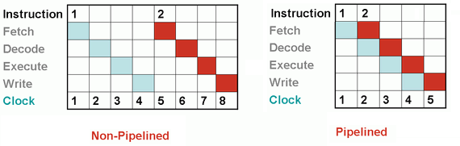
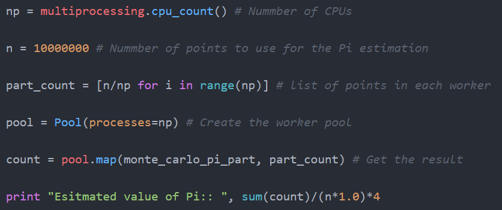
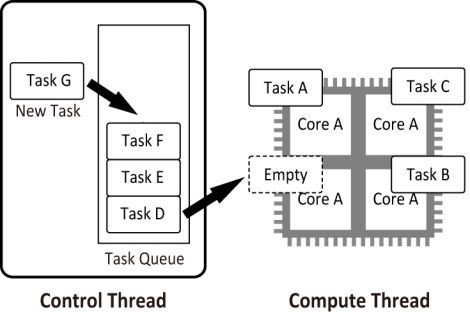
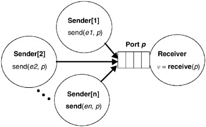

Tareitas
Son secciones lógicamente discretas de trabajo computacional. Una tarea está compuesta de un conjunto de instrucciones que seran ejecutadas por un procesador.
El paralelismo es una técnica de computación basada en principios aparentemente simples:
"Divida un gran problema en varios pequeños y resuélvalos al mismo tiempo"
Esto permite ejecutar más instrucciones en menos tiempo. Pero cuando se pone en práctica, se trata de un tema muy complejo y varios grupos científicos de todo el mundo lo están investigando.
La computación paralela es el uso de múltiples recursos computacionales para resolver un problema. Se distingue de la computación secuencial en que varias operaciones pueden ocurrir simultáneamente.
El paralelismo clásico, o puesto de otra manera, el clásico uso del paralelismo es el de diseño de programas eficientes en el ámbito científico. La simulación de problemas científicos es un área de gran importancia, los cuales requieren de una gran capacidad de procesamiento y de espacio de memoria, debido a las complejas operaciones que se deben realizar.
Otro uso clásico es el de las gráficas generadas por computadora. La generación de fotogramas requiere de una gran cantidad de cálculos matemáticos. Esto supone una tarea muy compleja para un solo procesador, luego es necesario que haya algún tipo de paralelismo, para distribuir la tarea para que esta sea realizada eficiente y eficazmente.
En el sentido más simple, la computación paralela es el uso simultáneo de múltiples recursos computacionales para resolver un problema computacional:

El hecho de que la programación paralela sea un paradigma da cuenta de que existe una razón por la cual no ha dejado de ser necesaria o no ha sido totalmente automatizable, igualmente hay otras razones interesantes detrás para entender la existencia, actualidad y contemporaneidad de la programación paralela:
Son secciones lógicamente discretas de trabajo computacional. Una tarea está compuesta de un conjunto de instrucciones que seran ejecutadas por un procesador.
Se refiere al tamaño de cada tarea y a la independiencia de las demás tareas, se dividen en dos categorías.
Es el proceso en el que las tareas son asignadas a los procesos o hilos, y se les da un orden
de ejecución. Este puede ser especificado en el código, en tiempo de compilación o dinámicamente en tiempo de ejecución.
El proceso de scheduling debe tener en cuenta la dependencia entre tareas, ya que, aunque muchas pueden ser independientes,
otras pueden requerir los datos producidos por otras tareas.
Criterios de planificación


Un proceso pesado padre puede convertirse en varios procesos livianos hijos, ejecutados de manera concurrente. Cada uno de estos procesos livianos se conoce como hilo. Estos se comunican entre ellos a través de la memoria global.
Los programas en paralelo necesitan la coordinación de procesos e hilos, para que haya una ejecución correcta. Los métodos de coordinación y sincronización en la programación paralela están fuertemente asociados a la manera en que los procesos o hilos intercambian información y esto depende de cómo está organizada la memoria en el hardware.
Mapping en el proceso de asignación de procesos e hilos a unidades de procesamiento, procesadores o núcleos. Usualmente el mapping se hace por el sistema en tiempo de ejecución, aunque en ocasiones puede ser influenciado por el programador.
Se refiere a la práctica de distribuir cantidades equitativas de trabajo entre las tareas, de modo que todas las tareas se mantengan ocupadas todo el tiempo. Se puede considerar una minimización del tiempo de inactividad de la tarea. Algunos puntos a tener en cuenta con el balanceo de carga son:

Es un proceso para aumentar el rendimiento entre dos sistemas procesando el mismo problema. Es la mejora en la velocidad de ejecución de una tarea ejecutada en dos arquitecturas similares con diferentes recursos. El SpeedUp resresenta la ganacia que se obtiene en la version paralela del programa respecto a la version secuencial del mismo.

Es la cantidad de tiempo requerido para coordinar tareas paralelas, en lugar de hacer un trabajo útil. Incluye factores como:
Es un segmento de código que manipula un recurso y se debe ejecutar de forma atómica, es decir, que no debe de ser accedido por más de un hilo en ejecución.
Es la representación del acceso de dos o más procesos a un recurso compartido sin control, este acceso depende del orden de llegada de los procesos

Es la ruptura o segmentación de una tarea en pasos realizados por diferentes unidades de procesador. El pipelining proviene de la idea de que en una tubería no es necesario esperar a que todo el agua dentro salga, para que pueda entrar más. Los procesadores modernos tienen un pipeline que separa las instrucciones en varias etapas, donde cada etapa corresponde a una acción diferente que necesita la salida de la anterior.
Es esa característica de los procesos que los orienta trabajar conjuntamente

Ley de la computación formulada por Gene Amdahl y dicta que la mejora obtenida en el rendimiento de un sistema debido a la alteración de uno de sus componentes está limitada por la fracción de tiempo que se utiliza dicho componente. Sea f el porcentaje paralelizado del programa expresado en decimal, la ley de Amdahl dice que llega un punto en el cual sin importar que el numero de procesadores sea muy alto , el speedup se va a comportar de manera lineal; esto de acuerdo al porcentaje que esté paralelizado el código. El speedup de un programa con un fragmento paralelizado se calcula con:
Esta ley ayuda a definir si introducir una mejora en el sistema vale o no la pena

Ley de la computación formulada por John L Gustafson en 1988, también llamada ley de Gustafson-Barsis, es una ley en ciencia de la computación que establece que cualquier problema suficientemente grande puede ser eficientemente paralelizado, ofrece un nuevo punto de vista y así una visión positiva de las ventajas del procesamiento paralelo.
En su fórmula, P es el número de procesadores, S es el speedup (aceleración), y α la parte no paralelizable del proceso.
Ley propuesta por Gordon E. Moore en 1965, inicialmente decía resumidamente que el número de transistores en un chip determinado
se doblaría cada año aunque unos años más tarde, en 1975, modificó su propia ley para aumentar esta cadencia a cada dos años.
Esto quiere decir un aumento del rendimiento en los procesadores del alrededor del 50%,
esto se traduce en escalar la velocidad de reloj de los procesadores, pero esta ley no es fidedigna desde el 2002
dónde solo ha habido un 20%, lo cual sigue siendo un aumento considerable, sin embargo, para que esto sea posible
es necesario reducir el tamaño de los transistores para que todos los
avances en computación que se han logrado hasta el día y las necesidades de procesamiento en crecimiento exponencial puedan satisfacerse
totalmente.
Veamos en la gráfica adjunta que el problema principal es que la ley no puede continuar indeterminadamente
porque esto implica un crecimiento exponencial, el cuál es imposible de mantener por espacio, pero principalmente
por el punto de la temperatura mismo, se puede ver que si esto fuese cierto llegaría muy pronto el año en que un solo procesador
alcanzara la temperatura de la superficie del sol.
La unidad de medida de transistores en superficie es MTr/mm2 o millones de transistores por milímetro cuadrado
Capacidad de operar actividades al mismo tiempo. Es decir se pueden tener varios procesos corriendo cada uno en un procesador o puede haber varios proceso que corran solo en un procesador
Son muchas actividades teniendo lugar al mismo tiempo, “la cualidad o el estado de ser paralelo”. El hecho de ser paralelo implica que solo se pueden tener varios procesos corriendo cada uno en un procesador.


Se caracterizaba por guardar las instrucciones de los procesos y los datos en una memoria electronica, a diferencia de como se modelaban los computadores de la epoca a través de una conexion de cables
En la memoria de acceso aleatorio se almacenaban los datos y los programas que estaban siendo ejecutados
Cuando se diseña un algoritmo paralelo es necesario tener en cuenta:
Hay un elemento de procesamiento, que tiene acceso a un único programa y a un almacenamiento de datos. En cada paso, el elemento de procesamiento carga una instrucción y la información correspondiente y ejecuta esta instrucción. El resultado es guardado de vuelta en el almacenamiento de datos. Luego SISD es el computador secuencial convencional, de acuerdo al modelo de von Neumann.

Hay múltiples elementos de procesamiento, en el que cada cual tiene memoria privada del programa, pero se tiene acceso común a una memoria global de información. En cada paso, cada elemento de procesamiento de obtiene la misma información de la memoria y carga una instrucción de la memoria privada del programa. Luego, las instrucciones posiblemente diferentes de cada unidad, son ejecutadas en paralelo, usando la información (idéntica) recibida anteriormente. Este modelo es muy restrictivo y no se ha usado en ningún computador de tipo comercial.

Hay múltiples elementos de procesamiento, en el que cada cual tiene acceso privado a la memoria de información (compartida o distribuida). Sin embargo, hay una sola memoria de programa, desde la cual una unidad de procesamiento especial obtiene y despacha instrucciones. En cada paso, cada unidad de procesamiento obtiene la misma instrucción y carga desde su memoria privada un elemento de información y ejecuta esta instrucción en dicho elemento. Entonces, la instrucción es síncronamente aplicada en paralelo por todos los elementos de proceso a diferentes elementos de información. Para aplicaciones con un grado significante de paralelismo de información, este acercamiento puede ser muy eficiente. Ejemplos pueden ser aplicaciones multimedia y algoritmos de gráficos de computadora.

Hay múltiples unidades de procesamiento, en la cual cada una tiene tanto instrucciones como información separada. Cada elemento ejecuta una instrucción distinta en un elemento de información distinto. Los elementos de proceso trabajan asíncronamente. Los clusters son ejemplo son ejemplos del modelo MIMD.

Se habla de paralelismo al nivel de bit, cuando se aumenta el tamaño de la palabra del procesador (tamaño de la cadena de bits a procesar). Este aumento reduce el número de instrucciones que tiene que ejecutar el procesador en variables cuyos tamaños sean mayores a la longitud de la cadena. Ejemplo: En un procesador de 8-bits sumar dos números de 16bits tomaría dos instrucciones. En un procesador de 16-bits esa operación requiere solo una instrucción.
Este tipo de paralelismo consiste en cambiar el orden de las intrucciones de un programa y juntarlas en grupos para posteriormente ser ejecutados en paralelo sin alterar el resultado final del programa.
Ejemplo: Un pipeline de 5 etapas: fetch (buscar la instrucción), decode (decodificarla), execute (ejecutarla), write (escribir en memoria el resultado de la operación).
En el gráfico anterior se observa el procesamiento de dos instrucciones sin pipeline, tomando un tiempo de 8 ciclos, y con pipeline reduciendo este tiempo a solo 5 ciclos.
Cada procesador realiza la misma tarea sobre un subconjunto independiente de datos. Ej: Dos granjeros se dividen el área de césped a podar. El caso clásico de paralelismo de datos, es el cálculo de pi por partes usando el método de monte carlo:
Ejemplo hecho en python
Cada hilo realiza una tarea distinta e independiente de las demás. Ej: Un granjero poda el césped, el otro cosecha.
Los patrones se han establecido como buenas practicas a la hora de realizar ingeniería de software.
Los patrones de control en el caso de la programación paralela son maneras de combinar la distribución de los procesos y el acceso a los datos para la solucion de un problema.
En este patrón de diseño se generan dos ejecuciones concurrentes, que empieza inmediatamente después de que el fork es llamado en código, después, se usa join para combinar estas dos ejecuciones concurrentes en una. Cada join puede unirse entonces a su fork correspondiente y lo hace antes de las otras terminen.
Map es un patrón que replica una función sobre todos los elementos de un conjunto de entrada. La función que está siendo replicada se llama función elemental, dada que la misma se aplica a una coleccion real de datos.
Stencil es un generalización del patron de Map, en el cual una función elemental tiene acceso no solo a un elemento del conjunto de entrada sino también a un conjunto de "vecinos"
Como la estructura de datos no es infinita se deben tener en cuenta el manejo de excepciones para los bordes de la misma.

Una reducción combina cada elemento de una colección en uno solo utilizado una función asociativa conocida como función combinatoria. Como es asociativa las tareas se pueden distribuir de muchas maneras y si la función resultara ser también conmutativa el número de posibilidides aumentaría aún más.
Scan realiza las reducciones de cada elemento perteneciente a una estructura. En otras palabras cada elemento de salida es la reduccion de un elemento de entrada. A traves de una función sucesora se avanza de un estado al otro haciendo folds en el proceso asociativo.
Parbegin y Parend originalmente propuesto por Dijsktra es un patrón para lenguajes estructurados en bloque como Pascal y permiten una especificación explicita del paralelismo, todo lo que esté contenido entre ambos será ejecutado en hilos separados en tanto se necesite y se genera un grafo de precedencia como el que se ve en la imagen, donde se muestra simplemente el orden de las instrucciones a ejecutar.
Es usada cuando se tienen dos o más procesos que necesitan ejecutarse simultanea y continuamente pero a diferentes velocidades. Si estos procesos corren en un único ciclo, pueden suceder problemas de temporización graves. Estos problemas de temporización ocurren cuando una parte del ciclo tarda más en ejecutarse de lo esperado. Si esto sucede, la sección restante del ciclo se atrasa. El patrón Maestro/Esclavo consiste en múltiples ciclos en paralelo. Un ciclo actúa como el maestro y los otros como esclavos. El ciclo maestro controla a todos los demás.

Esto viene de la taxonomia Flynn SPMD (Single Program, Multiple Data), múltiples procesadores autónomos ejecutan simultáneamente el mismo programa en puntos independientes, SIMD (Single instructon, multiple data) está basado en organizar los datos relevantes al problema en estructuras de datos iterativas como arreglos y en definir la computación en términos de una secuencia de actualizaciones paralelas en paralelo con estas estructuras de datos.
Los hilos se distinguen de los tradicionales procesos en que los procesos son generalmente independientes, llevan bastante información de estados, e interactúan sólo a través de mecanismos de comunicación dados por el sistema. Por otra parte, muchos hilos generalmente comparten otros recursos directamente. En muchos de los sistemas operativos que proveen facilidades para los hilos, es más rápido cambiar de un hilo a otro dentro del mismo proceso, que cambiar de un proceso a otro.


Esta arquitectura se basa en múltiples procesadores con su propia memoria física privada, las tareas pueden operar solo con información local y se necesita de la comunicación para obtener información remota, a través también de procesadores remotos Hay cuatro implementaciones que pueden servir como ejemplo conocidas para esta arquitectura tales como: múltiples sistemas operativos, Middlewares, clusters y grids. Las razones por las que se prefiere esta arquitectura en ciertos escenarios es porque en principio se pueden añadir tantas unidades de procesamiento como la red pueda soportar, pero las limitaciones recaen directamente en ella.


Grano grueso: pocas oportunidades de balanceo de carga. Grano fino: mayor overhead, mayor comunicación, más sincronización.


Se utilizan las funciones send y recieve para coordinar las acciones.
Un ejemplo que ilustra esta técnica es el handshake que establece la comunicación usando el protocolo http.
Ciertas clases de problemas producen desequilibrios de carga incluso si los datos están distribuidos uniformemente entre las tareas

Es el tiempo que tarda en ejecucion el programa A.
MIPS - Millones de operaciones por segundo. MFLOPS - Millones de operaciones de punto flotante por segundo.
La eficiencia del programa se mide en el costo de ejecucion.
Las herramientas de programación paralela son: lenguajes, API, frameworks y otras herramientas que permiten aprovechar el potencial del hardware de forma paralela. Sin embargo, la paralelización automática de un programa secuencial sigue siendo un problema a resolver a pesar de los muchos esfuerzos que se han hecho en los últimos 40 años. Los principales lenguajes de programación en paralelo permanecen explicitamente paralelos o parcialmente implícitos: un programador le da al compilador directivas de paralelización. Existen pocos lenguajes de programación paralelos totalmente implícitos: SISAL, Parallel Haskell, y (para FPGAs) Mitrion C.
Los lenguajes de programación paralelos en general se pueden agrupar en niveles de acuerdo con la arquitectura subyacente, el nivel de paralelización y el esfuerzo realizado por el programador para lograr dicho nivel.
En donde:
En la actualidad existen diversos modelos de programación paralela, ellos se agrupan de acuerdo a: el método de comunicación entre los diferentes elementos de cómputo, los mecanismos de acceso a la memoria de datos del programa, la forma de gestionar las ejecución de las tareas y más recientemente de acuerdo con la heterogeneidad del hardware sobre el cual pueden ser implementados.

En el modelo de intercambio de mensajes el algoritmo es dividido en piezas que serán procesadas dentro de un cluster (región) de nodos (CPUs) que están conectados por un bus de intercomunicación. La sincronización de los procesos ocurre por intercambio de mensajes entre los nodos. En cada CPU la memoria es compartida y cada núcleo se hace cargo de un proceso. Usualmente es utilizado para ejecutar muchas veces el mismo proceso con la misma distribución de procesamiento por cluster.
El usuario escribirá su aplicación como un proceso secuencial del que se lanzarán varias instancias que cooperan entre sí. A pesar que se comparte localmente la memoria, es considerado un modelo de memoria distribuida debido a que cada nodo dispone de su propia memoria local.
La aplicación más representativa de este modelo es MPI.

MPI es una librería estándar para ser usada en programas que aprovechen arquitecturas de múltiples procesadores. Fue desarrollada por el Centro de investigación en Computación paralela en Williamsbrug, y publicada en Noviembre de 1993, año en el que nace el foro que actualmente se encarga de su mantenimiento y evolución. Sus lenguajes de especificación son C , C++ y Fortran. Existen implementaciones para Python, Ocalm, Java, .NET y PHP.
Ventajas: Estandarización y eficiencia en el traspaso de mensajes, portabilidad, y disponibilidad en varios lenguajes de programación.
Desventajas: Posibles latencias del bus de intercomunicación, la dificultad en la sincronización entre tareas.

Este modelo busca la ejecución de múltiples tareas simultáneamente. Es un modelo de memoria compartida. Su estructura base es un hilo el cual es una unidad de ejecución que contiene instrucciones de un programa y la estructura de memoria necesaria para su ejecución independiente. La aplicación precursora de este modelo es POSIX Threads.
Posix es una librería para sistemas operativos. Es el estándar de IEEE 1003.1 Fue creada en 1995 para Linux, y ha tenido varias actualizaciones, la versión actual es la del 2017, pero existen unas especificaciones del Open Group actualizadas en el año 20018. Su especificación fue realizada en ANSI C y lenguaje ensamblador. Ha tenido implementaciones en otros sistemas operativos como Mac OS, Solaris y Windows (mediante la instalación de aplicaciones adicionales).
Ventajas: Estandarización y eficiencia.
Desventajas: complejidad en la sincronización entre tareas, algunas incompatibilidades dependiendo de la versión del sistema operativo.

OpenMP es una API para programación multiproceso de memoria compartida en múltiples plataformas que fue publicada por la Architecture Review Board en 1997. Su modelo de ejecución se basa en memoria compartida multihilos. Se considera el sucesor más sofisticado de Posix Threads. Dispone de directivas que apoyan al programador para convertir algoritmos secuenciales a paralelos de forma eficiente. Su especificiación fue realizada para lenguajes C, C++ y Fortran. Funciona en la mayoría de las arquitecturas de procesador y sistemas operativos, incluyendo Solaris, AIX, HP - UX, Linux, Mac OS X, y las plataformas de Windows .
TBB es una librería creada por Intel para que los programadores aprovechen al máximo el uso de los procesadores multinúcleo, es por ello que fue publicada en el año 2006 luego del lanzamiento del 1er procesador multinúcleo. En el 2007 Intel decidió ofrecer sus herramientas básicas como código abierto, sin embargo muchas de sus funcionalidades más interesantes se encuentran bajo licencia comercial. Su lenguaje de especificación es C++, y se trata de un modelo de memoria compartida que implementó el concepto de work-steal.

El modelo de TBB consiste en un organizador de las tareas que se encarga de distribuir la carga entre los distintos workers, cada worker o trabajador tiene una fila de tareas que debe ejecutar, sin embargo en caso de que algún núcleo termine antes, buscará a otro worker que tenga tareas pendientes por ejecutar y le robará la tarea más antigua para ayudarle con su carga y así hacer más eficiente el desempeño global del algoritmo.
Durante las últimas dos décadas los servidores, computadoras personales y PMD que utilizan tanto CPU como GPU se han vuelto más comunes en la industria del hardware. La aparición de estos equipos con tecnologías heterogéneas de procesamiento ha promovido un nuevo modelo de programación paralela: modelo de programación heterogéneo. En este entorno, el modelo de programación intenta aprovechar al máximo los recursos de cálculo del sistema disponibles mediante el uso de API y herramientas funcionales sin la necesidad de abordar paradigmas específicos de hardware (para CPU ó para GPU) o las limitantes de desempeño computacional entre ellos. En este tipo de modelos, los cálculos son gestionados por un procesador host que provee control sobre otros equipos computacionales (CPU/GPU). La programación paralela es realizada usando programas kernel los cuales implementan la funcionalidad que será ejecutada por los devices (equipos computacionales).
El framework más representativo de este modelo es OpenCL.
OpenCL es una API con lenguaje de programación propio llamado OpenCL C. Fue creada para fabricantes de hardware por Apple y desarrollada en conjunto con INTEL, IBM, NVIDIA y AMD. En el 2008 pasó al grupo Kronos para convertirse en estándar abierto. En ese momento se retiran Intel y NVIDIA e implementan sus propios entornos de desarrollo. Su especificación está basada en C y C++. Ha sido implementada para hardware heterogéneo: CPU, GPU, DSP, FPGA, ASIC. Como otros frameworks permite aprovechar el enorme potencial de la computación paralela y como ventaja lo ofrece de manera abierta y gratuita. Sin embargo y debido a que está implementado para distintos tipos de equipo, su interfaz y configuración se hace más compleja que aquellos que usan un único tipo de dispositivo.

CUDA es una API de computación en paralelo, que incluye un compilador y una serie de herramientas de desarrollo creadas por NVIDIA para implementar algoritmos en sus GPU. Permite programador mediante una variación del lenguaje de programación C. Mediante wrapers se puede usar en C/C++, Java y Fortran y existen múltiples aplicaciones en Python. CUDA intenta aprovechar el gran paralelismo, y el alto ancho de banda de la memoria en las GPU en aplicaciones con un gran coste aritmético frente a realizar numerosos accesos a memoria principal, lo que podría actuar de cuello de botella.
Seleccionar el mejor modelo de programación paralela dependerá del tipo de tarea a ejecutar, el dominio del negocio y la aplicación que necesitamos implementar. Por ejemplo, si se intenta realizar una implementación en donde los datos requeridos para el algoritmo son muy grandes, en primera instancia se podría pensar en un modelo de memoria distribuida, en donde de ser necesario se distribuye el procesamiento de los datos en varios nodos y se usa el modelo MPI para la implementación. Sin embargo, si por ejemplo se tiene un algoritmo secuencial que ya está funcionando y lo que queremos es hacerlo más eficiente aprovechando un nuevo hardware y también sabemos que el requerimiento de memoria no es muy alto , se podría pensar en el uso de OpenMP pues además incluye directivas que ayudan en la paralelización del algoritmo. También se puede pensar en darle solución a la necesidad mediante un sistema híbrido por ejemplo: MPI + OpenMP.
Sin embargo, siempre se debe tener en cuenta que el modelo seleccionado debería cumplir las siguientes propiedades:
El desempeño del modelo debe ser predecible, aún si se escala a sistemas más grandes.
El modelo debería disponer de herramientas que le permitan monitorear y ajustar su desempeño y debe contener las librerías y herramientas suficientes para realizar las implementaciones de forma fácil y eficiente.
El modelo debe ser escalable a otros sistemas de hardware actuales y futuros.
Actualmente, existe una variedad de lenguajes de programación con un enfoque multiparadigma, los cuales permiten tener flexibilidad a la hora de querer lograr un objetivo, en cuanto a programación. Igualmente, los lenguajes suelen complementar dicho comportamiento con librerías, APIs o frameworks (ya sean comunitarios o privativos), los cuales le permiten al programador el disponer de herramientas de trabajo.
El paradigma paralelo es implementado, en la mayoría de los lenguajes más conocidos actualmente, a través de dichas herramientas. En la tabla, se hace un recuento de herramientas específicas de algunos de esos lenguajes, mencionando que no son las únicas que existen.
| Lenguaje | Implementación |
| C | Posix, MPI, OpenMp |
| C++ |
Rogue Wave, Boost, Thread, Dlib, OpenMP, OpenThreads, Parallel Patterns Library, POCO C++ Libraries, POSIX Threads, Qt Qthread, Stapl, TBB, IPP |
| C# | Task Parallel Library. Parallel Query PLINQ, |
| Fortran | Co-arrays, MPI, MPICH, OpenMPI, OpenMP,OMP, ADAPTOR, PGI CUDA Fortran compiler, PIPS. |
| Go | |
| Java | Clase Thread (interfaz Runnable) |
| Javascript | Parallel JS (usando web workers) |
| Julia | Tareas asíncronas, Multihilos, computación distribuida |
| Matlab | Parallel computing toolbox |
| Python | Múltiples librerías |
| Ruby | Gem Parallel |
Ciertas clases de problemas producen desequilibrios de carga incluso si los datos están distribuidos uniformemente entre las tareas
Worldwide LHC Computing Grid (WLCG) es una colaboración global de centros de computación. Fue lanzado en 2002 para proporcionar un recurso para almacenar, distribuir y analizar los 15 petabytes (15 millones de gigabytes) de datos generados cada año por el Large Hadron Collider (LHC).
Uno de los primeros usos exitosos de la computación paralela fue la predicción del tiempo. La información, como la temperatura, la humedad y las precipitaciones, se ha recolectado y utilizado para predecir el clima durante más de 500 años. En 1904, el físico y meteorólogo noruego Vilhelm Bjerknes propuso un modelo de ecuaciones diferenciales para la predicción meteorológica que incluía siete variables, incluyendo temperatura, lluvia y humedad.

Las imágenes satelitales consisten en grandes cantidades de datos. Por ejemplo, las imágenes Landsat 7 consta de siete tablas de datos, donde cada entrada en una tabla representa una longitud de onda magnética diferente (azul, verde, rojo o infrarrojo térmico) para un píxel de 30 metros cuadrados de la superficie de la Tierra.
Hay muchas aplicaciones de los supercomputadores a la astronomía, incluyendo el uso de un supercomputador para simular eventos en el futuro, o pasado, para probar teorías astronómicas. La Universidad de Minnesota Supercomputer Center simuló lo que una explosión de supernova que se origina en el borde de una gigantesca nube de gas molecular interestelar parecería 650 años después de la explosión.
El proyecto RePhrase incluido en el programa Horizonte 2020 de la UE tuvo como objetivo trabajar en la mejora del desarrollo de software para arquitecturas paralelas y heterogéneas. Los resultados de esta investigación encontraron aplicación en diversos campos, como en la mejora de procesos industriales de fabricación, la monitorización del tráfico ferroviario y la optimización de aplicaciones para el diagnóstico de enfermedades mentales. Este último consistía en el procesamiento por computador de imágenes capturadas mediante resonancia magnética del cerebro, con el objetivo de conseguir diagnósticos más rápidos en el caso de enfermedades como la la esquizofrenia, el trastorno bipolar o la depresión.
Para empezar, POSIX significa Portable Operating System Interface. Está compuesto por una serie de estándares especificados por IEEE para promover la interoperabilidad de los sistemas operativos. Además, POSIX establece reglas para la portabilidad de programas.
Los Hilos POSIX, generalmente denominados pthreads, es un modelo de ejecución independiente del lenguaje, así como un modelo de ejecución paralelo. Permite que un programa controle múltiples flujos de trabajo diferentes que se superponen en el tiempo. Cada flujo de trabajo se denomina subproceso, y la creación y el control de estos flujos se logra haciendo llamadas a la API de subprocesos POSIX. Los Hilos POSIX son una API definida por el estándar POSIX.1c, extensiones de Threads ( IEEE Std 1003.1c-1995). [25]
#include <iostream> #include <cstdlib> #include <pthread.h> using namespace std; #define NUM_THREADS 3 void *PrintHello(void *threadid) { long tid; tid = (long)threadid; cout << "Hello World! Thread ID, " << tid << endl; pthread_exit(NULL); } int main () { pthread_t threads[NUM_THREADS]; int rc; int i; for( i = 0; i < NUM_THREADS; i++ ) { cout << "main() : creating thread, " << i << endl; rc = pthread_create(&threads[i], NULL, PrintHello, (void *)i); if (rc) { cout << "Error:unable to create thread," << rc << endl; exit(-1); } } pthread_exit(NULL); }Salida: main() : creating thread, 0 main() : creating thread, 1 main() : creating thread, 2 Hello World! Thread ID, 0 Hello World! Thread ID, 2 Hello World! Thread ID, 1
Es una interfaz de programa de aplicación (API) que se puede utilizar para dirigir explícitamente paralelismo de memoria compartida multi-procesos. Está compuesto por:
#include <omp.h>
int main () {
int var1, var2, var3;
//Código en serie...
//Comienzo de la región paralela hace fork del conjunto de threads
#pragma omp parallel private(var1, var2) shared(var3)
{
//Región paralela ejecutada por todos los threads
//otras directivas OpenMP
//Todos los threads se juntan en el thread master
}
//Continuación del código...
}
#include <omp.h>
#include <stdio.h>
int main(int argc, char *argv[])
{
/* Cada thread tiene una variable id privada (tid) */
int nthreads, tid;
#pragma omp parallel private(tid)
{
/* Se asigna y se imprime el id de cada thread */
tid = omp_get_thread_num();
printf("Hello World desde el thread = %d\n", tid);
/* Solo el thread master ejecuta lo siguiente */
if (tid == 0)
{
nthreads = omp_get_num_threads();
printf("El numero de threads es = %d\n", nthreads);
}
}
}
#include <omp.h>
#include <stdio.h>
#define N 1000
#define CHUNKSIZE 100
int main(int argc, char *argv[])
{
int i, chunk;
float a[N], b[N], c[N];
for (i=0; i < N; i++)
a[i] = b[i] = i * 1.0;
chunk = CHUNKSIZE;
#pragma omp parallel for \
shared(a,b,c,chunk) private(i) \
schedule(static,chunk)
for (i=0; i < N; i++)
c[i] = a[i] + b[i];
}
#include <omp.h>
int main(int argc, char *argv[])
{
int x;
x = 0;
#pragma omp parallel shared(x)
{
#pragma omp critical
x = x + 1;
}
/* Final de la región paralela */
}
CUDA son las siglas de Compute Unified Device Architecture (Arquitectura Unificada de Dispositivos de Cómputo) que hace referencia a una plataforma de computación en paralelo incluyendo un compilador y un conjunto de herramientas de desarrollo creadas por nVidia que permiten a los programadores usar una variación del lenguaje de programación C para codificar algoritmos en GPU de nVidia.[27]
#include<stdio.h> #include<stdlib.h> __global__ void print_from_gpu(void) { printf("Hello World! from thread [%d,%d] \ From device\n", threadIdx.x,blockIdx.x); } int main(void) { printf("Hello World from host!\n"); print_from_gpu<<<1,4>>>(); cudaDeviceSynchronize(); return 0; }Salida: Hello World from host! Hello World! from thread [3,0] Hello World! from thread [1,0] Hello World! from thread [0,0] Hello World! from thread [2,0]
public class CajeraThread extends Thread {
private String nombre;
private Cliente cliente;
private long initialTime;
// Constructor, getter & setter
@Override
public void run() {
System.out.println("La cajera " + this.nombre + " COMIENZA A PROCESAR LA COMPRA DEL CLIENTE "
+ this.cliente.getNombre() + " EN EL TIEMPO: "
+ (System.currentTimeMillis() - this.initialTime) / 1000
+ "seg");
for (int i = 0; i < this.cliente.getCarroCompra().length; i++) {
this.esperarXsegundos(cliente.getCarroCompra()[i]);
System.out.println("Procesado el producto " + (i + 1)
+ " del cliente " + this.cliente.getNombre() + "->Tiempo: "
+ (System.currentTimeMillis() - this.initialTime) / 1000
+ "seg");
}
System.out.println("La cajera " + this.nombre + " HA TERMINADO DE PROCESAR "
+ this.cliente.getNombre() + " EN EL TIEMPO: "
+ (System.currentTimeMillis() - this.initialTime) / 1000
+ "seg");
}
private void esperarXsegundos(int segundos) {
try {
Thread.sleep(segundos * 1000);
} catch (InterruptedException ex) {
Thread.currentThread().interrupt();
}
}
}
En este ejemplo elaborado mediante el uso de objetos en java se simula el proceso de compra en un supermercado, para esto se tiene la clase cliente y la clase cajero que es la que se va a paralelizar mediante la herencia de la clase Thread.
public class MainThread {
public static void main(String[] args) {
Cliente cliente1 = new Cliente("Cliente 1", new int[] { 2, 2, 1, 5, 2, 3 });
Cliente cliente2 = new Cliente("Cliente 2", new int[] { 1, 3, 5, 1, 1 });
// Tiempo inicial de referencia
long initialTime = System.currentTimeMillis();
CajeraThread cajera1 = new CajeraThread("Cajera 1", cliente1, initialTime);
CajeraThread cajera2 = new CajeraThread("Cajera 2", cliente2, initialTime);
cajera1.start();
cajera2.start();
}
}
Se inicializan los dos hilos, luego se imprime en pantalla cada vez que se pasen los productos en cada cajero.
Se puede observar como se realiza de forma paralela la compra en cada cajero.
La cajera Cajera 1 COMIENZA A PROCESAR LA COMPRA DEL CLIENTE Cliente 1 EN EL TIEMPO: 0seg
La cajera Cajera 2 COMIENZA A PROCESAR LA COMPRA DEL CLIENTE Cliente 2 EN EL TIEMPO: 0seg
Procesado el producto 1 del cliente Cliente 2->Tiempo: 1seg
Procesado el producto 1 del cliente Cliente 1->Tiempo: 2seg
Procesado el producto 2 del cliente Cliente 2->Tiempo: 4seg
Procesado el producto 2 del cliente Cliente 1->Tiempo: 4seg
Procesado el producto 3 del cliente Cliente 1->Tiempo: 5seg
Procesado el producto 3 del cliente Cliente 2->Tiempo: 9seg
Procesado el producto 4 del cliente Cliente 2->Tiempo: 10seg
Procesado el producto 4 del cliente Cliente 1->Tiempo: 10seg
Procesado el producto 5 del cliente Cliente 2->Tiempo: 11seg
La cajera Cajera 2 HA TERMINADO DE PROCESAR Cliente 2 EN EL TIEMPO: 11seg
Procesado el producto 5 del cliente Cliente 1->Tiempo: 12seg
Procesado el producto 6 del cliente Cliente 1->Tiempo: 15seg
La cajera Cajera 1 HA TERMINADO DE PROCESAR Cliente 1 EN EL TIEMPO: 15seg
Resultados obtenidos al ejecutar el programa para los casos de ejemplo descritos en el main haciendo uso de dos hilos de trabajo.